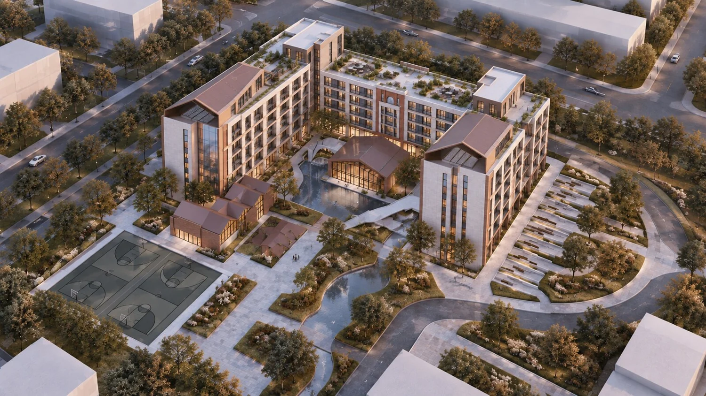

01 / 06共同客厅
院落构成宿舍的
共同客厅。
围合布局建立安静内院，低层公共体量向校园打开。

建筑设计方案
院落之中，生活展开。
围合布局建立安静内院，低层公共体量向校园打开。
住宿、运动与景观在步行范围内连续发生，回应住宿与共享空间的双重需求。
面向校园的开口，让内院、入口前场与室外活动空间产生联系。
房间外窗与庭院界面共同影响学习、休息和室内感受，也带来庭院景观视野。
新建筑的高度与周边既有建筑共同构成校园尺度。
公共厅、拱廊与水景边界，提供不同强度的交往与停留空间。
一座面向校园打开的院落，把住宿、公共服务与景观组织在一起。
项目位于德园宿舍、艺术中心与综合服务楼之间，承接既有生活组团，连接学院北路与金河路。主入口、次入口与地下车库出入口分置，减少日常人流与车辆流线交叉。
¹ 正文指标表将 692 间标为“普通三人间和六人间”；PPT 备注的本版统计口径为 692 间六人间＋8 间无障碍双人间。床位计算为 692 × 6＋8 × 2＝4,168。三人间保留为房型对照，不重复计入 700 间、4,168 床。
按最新房间和床位指标配置标准寝室、无障碍寝室及配套设施。
把学习、交流和生活支持纳入住宿建筑，形成寝室之外的共享空间。
承接德园生活组团与校园既有路径，统筹人行到达、后勤及外围交通。
通过庭院、绿化、遮阳与夜间照明改善日常感受，环境效果由专项设计验证。
采用 U 形半围合布局，两翼 9 层、中部连接楼 6 层，开口朝西偏南 15°。庭院面向校园展开，主要到达路径衔接入口广场与公共厅。首层层高 4.5 m，其余地上楼层 3.5 m（PPT 备注口径）。
以学生住宿为主体，在低层公共空间组织学习、交流和生活服务。寝室、共享空间与服务节点通过走廊、楼梯、电梯联系。
重复窗格、水平线脚与端部体量建立立面秩序。公共厅、拱廊、台阶、水景和绿地提供多层次停留空间，延续校园生活场景。
宿舍位于德园宿舍、艺术中心和综合服务楼之间，补齐既有生活组团，内院形成共同客厅。
联系学院北路与金河路，宿舍主入口、次入口、地下车库出入口分置。
校园路径、入口广场与庭院层层衔接，以清晰的到达过程组织公共生活。
暖色实体、浅色线脚和深色窗框形成稳定的主材关系，呼应地域材料质感。
文化主题可在景墙、铺装与展示空间中深化，具体纹样和构件仍需专项设计。
两翼与连接楼围合庭院，住宿功能构成项目主体。
主要到达轴联系校园入口与公共厅；生活联系轴串联两翼及庭院边缘，并衔接主校区。
核心住宿、共享服务、景观活动、交通衔接、屋顶共享共同组织日常使用。
从场地边界到屋顶花园，逐步建立住宿、共享与通行的空间关系。
沿着六个步骤，查看体量与公共空间的生成逻辑。

依据场地边界与校园肌理，植入整体建筑体量，形成围合的初始体块。
两翼与后部连接体构成多层宿舍，开放的 U 形居住单元面向中央庭院与室外活动空间，营造共享、连续的生活场所。
中央庭院独立建筑与前侧附属房共同构成公共配套核心，向庭院和室外活动空间开放，连接宿舍与校园公共生活。共享功能宜集中在低层及庭院节点。
屋顶露台组织休闲交流和观景活动。
前场广场、篮球场与阶梯活动空间衔接日常生活。
图中功能分区为基于形态的概念推定，待平面确认。
庭院水景、林荫步道、台阶广场、运动场地、共享木平台与校园绿地共同构成景观体验联系。中心水景营造宁静宜人的活动核心，树阵与绿地建立舒适生态基底，运动、休闲、交流点缀校园生活。
中央路径保持直观，庭院两侧以绿地与边缘步道丰富停留方式。绿地、水景及铺装共同组织到达、停留与视线。
亲水平台与通行面保持清晰边界，结合防滑、排水及维护设计。
树种、铺装与水景运行适应当地季节变化，兼顾冬季清雪与停水维护。
主步行轴分配到两翼与公共厅，一层拱廊环线承接慢行。
学生从前场主轴到达，进入两翼门厅后分散到垂直交通。
公共厅与庭院环线承接课间、自习及休闲活动，减少在门厅长时间聚集。
主轴分岔、门禁前和台阶落脚点留出等候空间，避免横向穿插。
人流图为设计流线示意，不表示实测人流量。
生活物资、维修与临时搬运行程优先沿外侧道路组织，内部庭院以步行为主。
卸货与短停宜靠近服务入口，错开学生早晚集中到达时段。
前场与外围道路交接处明确过街位置，非机动车停放不得挤占入口。图中分别表达外围车行建议与步行联系。
路线为组织建议；道路尺寸与权属待核实。
房门、走廊、楼梯与首层出口共同决定疏散组织。
外围道路、消防车行流线与室外消防登高及扑救场地应满足规范，并结合景观设计。
景观、停车与门禁不得妨碍必要通行。
图中以东、南、西方向表达太阳方位。建筑与正北方向成一定角度，使各方向宿舍有获得光照的机会。
图中采用北向来风假设，表达建筑与庭院的风环境关系。
分析图用于定性空间关系说明，不代表已完成的日照、风环境模拟或实测结论。
平屋面活动区、设备区与坡屋顶分别组织；坡屋顶不作为活动通行面。
平屋面与屋面构筑物共同形成屋顶花园。小面积景观绿化与活动场地、休闲座椅整体设计，提供多层次学习、休憩及交流空间。
设备、检修路径与活动空间分开，进行景观遮蔽；屋面出口联系可使用的露台。
结构荷载、防护、疏散、防水及冬季积雪均需专项深化。能源设施及屋顶使用属于策略建议，非既定设计。
屋面收集与地面消纳分别组织。屋面排水系统连接有组织的地面排放或回用系统，检修点保持可达。
适宜位置可布置雨水花园与透水铺装，避开基础和主要无障碍路线。图中表达雨水汇流及种植消纳建议。
装饰水景不能直接视为雨洪调蓄容量，须结合标高、土壤和溢流路径校核。
海绵策略为示意；径流量、容积与控制率尚未确定。分析图不能用于反算建筑高度、床位或工程模拟结果。
从晨光到夜色，从庭院到寝室。向下浏览，走进建筑里的日常生活。
夜景鸟瞰
照明组织入口识别，连接步行路径与公共活动节点。
日景鸟瞰
低层公共建筑与两侧住宿体量共同界定入口。
内院日常
居住界面、公共体量与庭院景观在同一空间中相遇。
四季庭院
四季皆有景色可赏的植物种植，与硬质空间、常绿植物共同维持冬季空间识别。
屋顶花园
屋顶平台承接休憩与观景。构架、绿化和设备收纳于统一轮廓，延续内院的共享生活。
屋顶乐园
在屋顶的小小游乐园感受生活，凝聚友情。
走进校园
沉浸式感受宿舍带来的日常生活体验。
庭院集合
不论一起上课还是参加活动，庭院中的任何角落都可以停留，等待伙伴。
拱廊停留
拱廊放大的灰空间兼顾行走与停留，提供短暂休息、聊天的场所，也可遮阳避雨。
入口灰空间
低层玻璃体量提供清晰的到达界面，连续拱券将遮阳、避雨与步行停留整合在同一条边界中。
共享室内
通高大厅、楼梯与窗边休息区形成竖向公共带，自然光与木质界面降低公共空间的制度感。
共享自习室
想继续学习又不想打扰室友时，可以来到共享自习室。
共享书吧
小小书屋可以阅读，也可以做喜欢的手工。
景观寝室
外窗直接面向内院或校园远景，让日常生活持续感知季节与时间。
夜间活动
屋顶花园可承接露天电影、健身、聚会与聊天。活动也要注意时间，兼顾住宿休息。
安静入夜
在庭院风声雨声与温馨氛围中，结束一天，进入睡眠时光。
从地下平战转换，到住宿单元、立面与后勤服务，展开方案的具体组织。
图纸保留完整尺寸、颜色、图例与原始标注。点击任意图纸，可放大、拖动查看细部。
原图方向和部分标高保留，不作为修订后的施工依据。两翼 9 层、中部 6 层，首层 4.5 m、其余地上楼层 3.5 m，U 形开口西偏南 15°，采用 PPT 备注中的本版口径。
停车区域与内部车行通道构成主要平时功能。坡道联系室外，设备用房结合楼梯和电梯节点布置。
停车与设备配套；车位指标沿用正文统计范围。
战时人防区域占据地下主体空间，与平时停车空间对应。楼梯、坡道和设备用房构成战时转换所需空间条件。
人防分区与容量以专项设计为准。
共享大厅位于内院中心，公共空间靠近主入口，内院与住宿翼通过同一层步行网络连续连接。两翼组织宿舍单元，房间沿外立面布置，交通核分散于转角和端部，缩短归家路径。公共与居住清晰分层，共享书吧与共享自习室形成活动节点。
原图方向与标高保留，方案朝向和层高采用本版备注口径。
住宿单元延续 U 形布局，公共走廊串联两翼与连接楼。共享书吧、室外平台及局部上空构成低层公共空间。房间沿外立面布置，交通核分散在转角和端部。
原图 +3.500 等旧标高保留；首层层高按本版备注为 4.5 m。
标准住宿层沿走廊两侧排列住宿单元，楼梯、电梯及前室组织竖向联系；盥洗、开水等公共服务空间靠近交通节点。
三至六层合并表达，房间及床位总量以本版指标为准。
中部连接楼转为屋面，两翼高区继续布置住宿空间。楼梯、电梯及公共服务节点延续竖向对应关系。
灰色表示屋面或室外平台，不计作本层住宿空间。
两翼与中部连接楼形成不同高度的屋面关系，电梯机房、排烟机房及楼梯节点集中于交通核心附近。屋顶花园与外卖无人机停机坪可与景观植物统一设计，追求便利使用和自然效果。
保留原屋顶图，与屋顶景观意向共同作为深化依据。
三段式布局：卫生间靠走廊，阳台靠外墙，中间为多人共享卧室。上床下桌，配独立储物空间。
干湿分离式卫生间、连通式阳台；中间卧室隔墙采用半围合模式，在空间围合中保持空气流通。
同为三段式布局：卫生间靠走廊、阳台靠外墙，中间为共享卧室。上床下桌，设独立储物空间。
干湿分离式卫生间，紧凑型房间，提供一定隐私性。该房型不叠加计入本版 700 间、4,168 床，逐层房型表仍需统一。
房型人数按 PPT 口径，不因床具外观重复计数。8 间无障碍双人间已计入指标，PPT 未单列其单元平面图。
建立亲人的步行尺度，形成连续遮蔽边界。
重复单元保持立面秩序，对应标准宿舍模数。
稳定围合转角，建立校园天际线识别度。
深浅材质对应不同体块，控制大体量视觉重量。
共享空间采用更轻、更透明的表达，与实体墙面形成强烈视觉对比。
端部体量稳定围合转角，强化校园天际线识别度。
门厅、公共厅与路径转折处保持明确识别。
台阶边缘、水景边界和坡道设置清晰引导，避免眩光。
以水景照明营造闲适氛围，衔接公共活动节点。
共享自习室和共享书吧可独立安排开放时段，灵活管理。
主入口大厅设置会客区，需要进入住宿层的访客按学校制度登记。
次要入口设置门禁，方便管理。
洗衣、饮水、公共卫生、保洁储物等服务节点匹配实际住宿人数。
物资搬运、垃圾暂存与设备维护利用服务入口，减少穿越学习空间。
PPT 提出利用屋顶布置无人机快递或外卖停机坪，节约地面空间，并表达适应恶劣天气的服务设想。具体运行条件及适用天气仍需后续深化验证。